Dispatch · Video walkthrough
Dispatch: filter the console and update unit status and staffing
Find an incident or resource, recognize console filters, submit a unit status and personnel staffing update, and verify the saved fields.
Before you begin
- A normal authorized Dispatch session in the isolated fictional training department.
- Existing units, personnel and calls from the training seed.
Chapters
- Find the console panels
- Search within the call panel
- Recognize a selected call
- Clear incident context and check searches
- Inspect available units
- Restore the unit list and search
- Open the intended unit’s actions
- Read status and destination choices
- Check the destination selection
- Review and submit the unit update
- Read the update result
- Verify saved unit state and crew
- Read back the stored unit note
- Find the intended person
- Identify the separate personnel controls
- Choose a staffing level
- Review and submit personnel staffing
- Read the staffing update result
- Verify status and staffing separately
Watch the walkthrough
Step 1
Find the console panels
Resgrid Dispatch brings calls, units, personnel, the map, and notes into one console. This walkthrough is for dispatchers and other authorized coordinators who need to find the right resource and maintain its recorded state. We use a fictional firehouse, but the same console pattern can support community response teams, search and rescue, security operations, wildland contractors, and industrial response.

Practice
Locate the call, unit and personnel panels before choosing a resource.
Step 2
Search within the call panel
Start in the call panel and enter Community in its search field. The list now shows the fictional community medical standby. Notice that the top summary still reports three active calls while the searched panel shows one. Search helps find an incident in the list; check the incident name before selecting it.
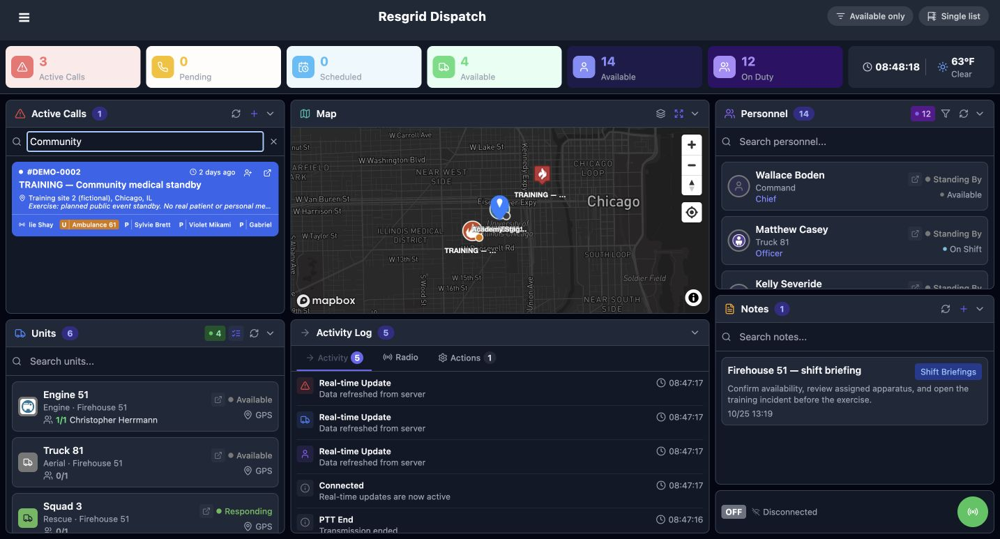
Practice
Search for an existing fictional call without modifying it.
Step 3
Recognize a selected call
Select the intended call card. The blue Filtering by call banner identifies DEMO-0002, and the resource panels now say Units on Call and Personnel on Call. Call Notes is also scoped to that incident. Read this banner before acting. An On Call assignment label and the resource status are separate pieces of information.
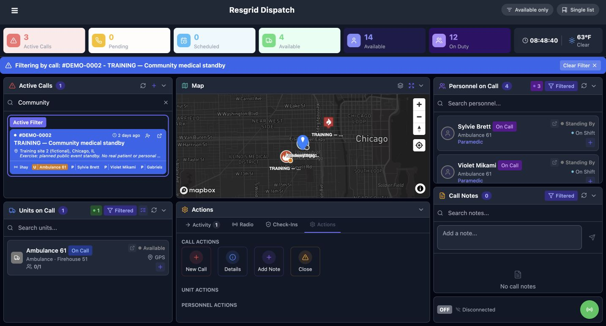
Practice
Confirm the call identifier in the banner and the incident-scoped panel headings.
Step 4
Clear incident context and check searches
Use Clear Filter to leave the incident context. The banner is gone and the resource headings return to Units, Personnel, and Notes. Community is still in the call search field, so that panel remains narrowed. Clear its search separately when you want the full call list. This distinction helps explain why a panel can still look filtered after leaving an incident.
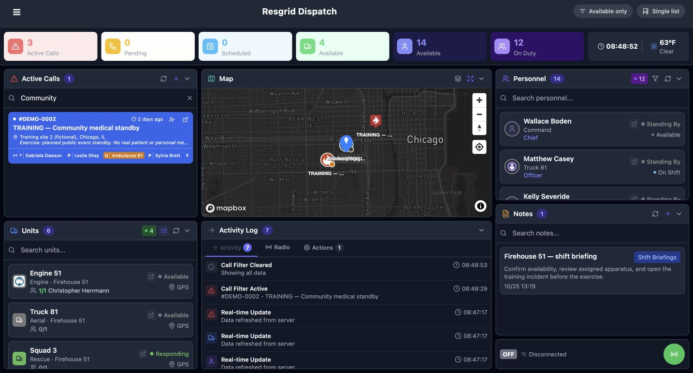
Practice
Clear the call context, then separately clear the call-panel search.
Step 5
Inspect available units
With the call search cleared, turn on Available only at the top. In this recorded example, the unit panel contains four units instead of six. Engine 51 is listed as Available. Read the resulting list and its count when filtering resources. A recorded availability value still needs to be interpreted using your organization’s dispatch procedure.
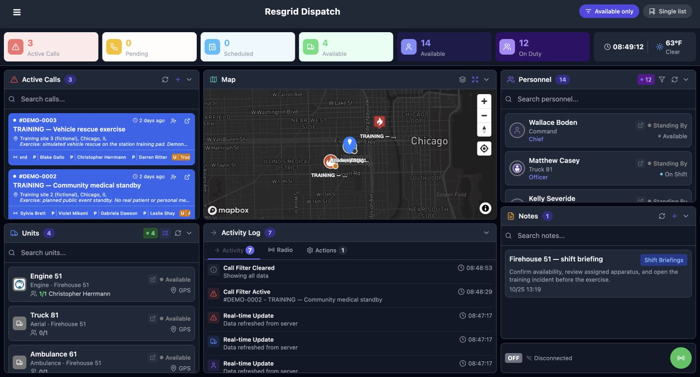
Practice
Compare the visible unit list before and after Available only.
Step 6
Restore the unit list and search
Turn Available only off, then enter Engine in the unit search. Two matches are visible: Engine 51, marked Available, and Reserve Engine 51, marked Out of Service. Check the full unit name and displayed state. Similar names make it especially useful to select from the unit panel deliberately and verify the selected resource before submitting an update.
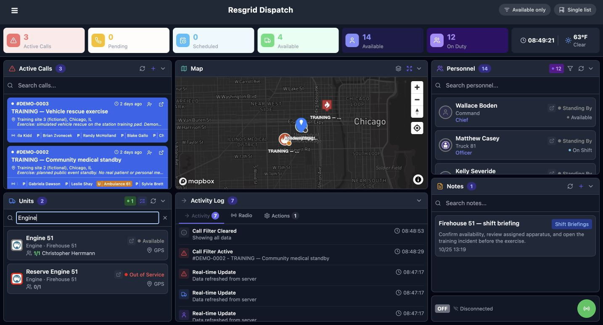
Practice
Locate the intended unit and distinguish it from similarly named resources.
Step 7
Open the intended unit’s actions
Select Engine 51 in the unit panel. Its Actions area now identifies Engine 51 and exposes Status, Select Status, and Note. Check that identity before entering an update. This is the unit action form. Leave unrelated fields alone when the task only requires a status and its supporting note.
Practice
Verify Engine 51 in the action area before opening Select Status.
Step 8
Read status and destination choices
Open Select Status. The displayed choices include Responding, Available, Committed, and On Scene. The chooser also describes their destination support: Responding shows Call destination, while Available shows Station destination in this department. Choose the state that matches the intended action. For this software exercise, we choose Available.
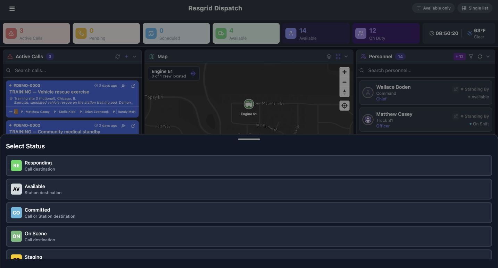
Practice
Review the actual department choices and select Available for this exercise.
Step 9
Check the destination selection
Open Destination and review the current selection. No Destination is selected. The Stations section contains rows named No Station and Firehouse 51. A row named No Station and the separate No Destination choice are distinct entries in this example. We retain No Destination for the exercise. Check the selected destination before sending any status update.
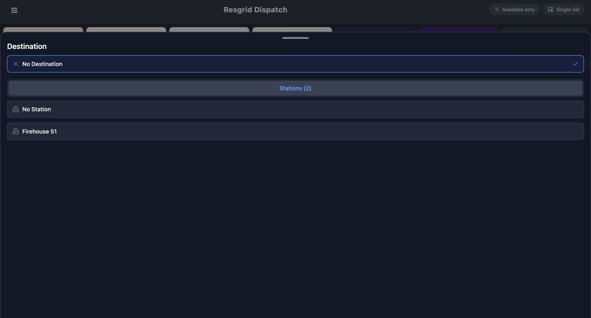
Practice
Confirm No Destination remains selected in this exercise.
Step 10
Review and submit the unit update
Review the prepared values: Engine 51, Available, and No Destination. The note says Training only, Dispatch status practice. Once the intended resource and values are correct, choose Update Status. The note provides context for this fictional software exercise. For actual operations, enter the information your organization requires for the status change.
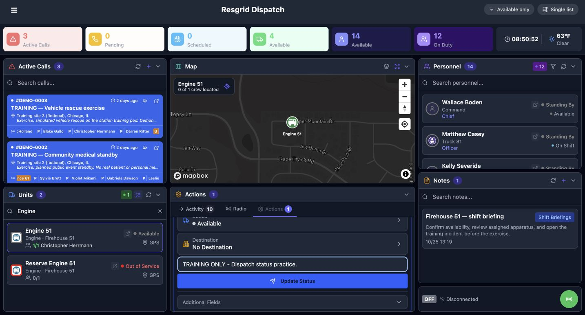
Practice
Check resource identity, status, destination and note before Update Status.
Step 11
Read the update result
After submission, the Activity Log reports Unit status updated, and Engine 51 still displays Available. We deliberately submitted the existing Available value as practice. Read the result rather than expecting a different status color. Next, inspect the unit’s separate details page to check the stored values.
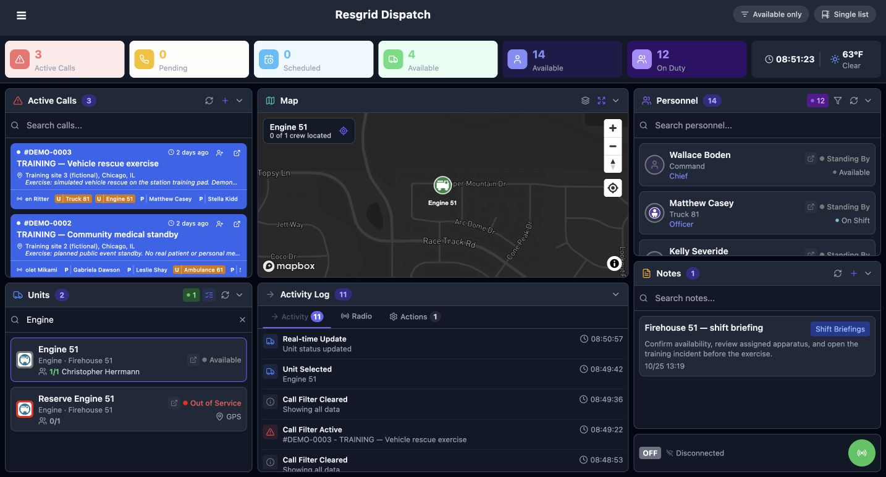
Practice
Find Unit status updated and compare the unit card’s displayed status.
Step 12
Verify saved unit state and crew
Open Engine 51’s details using its details icon. Status Information shows Available, Destination shows None, and Status Updated provides a recorded timestamp. Assigned Roles still lists Christopher Herrmann. This readback lets a coordinator check the saved unit state and see the crew assignment on the same record.
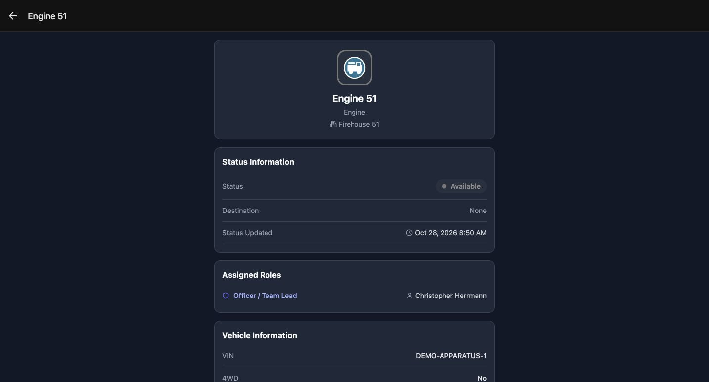
Practice
Read the status, destination and retained crew assignment in Unit Details.
Step 13
Read back the stored unit note
Scroll within the same unit details page to Note. The exact training note is now visible as stored record text. Compare it with the note entered before submission. Checking the saved note is useful when another coordinator needs to understand the context of an update.
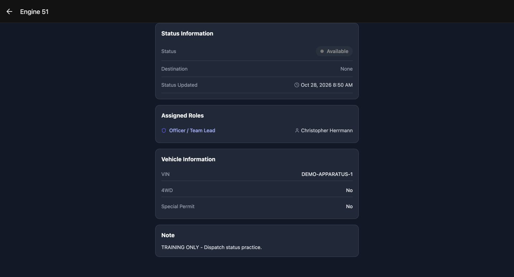
Practice
Compare the saved Note with the submitted exercise text.
Step 14
Find the intended person
Return to the console and search for Boden in Personnel. The matching Wallace Boden card shows Command and Chief, along with Standing By and Available. Read these fields separately: the card presents a response status and a staffing value. Confirm the person’s name before opening their actions.
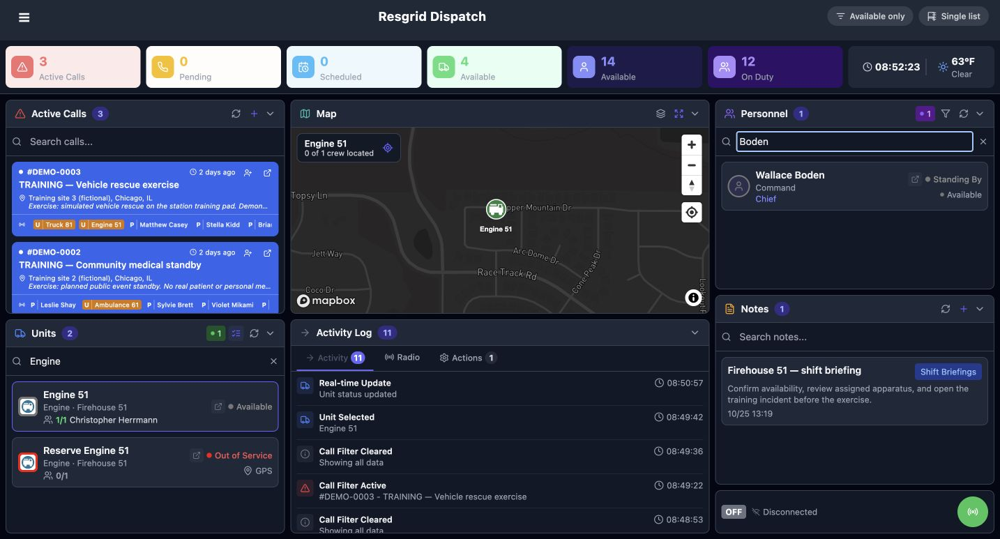
Practice
Find Wallace Boden and distinguish response status from staffing.
Step 15
Identify the separate personnel controls
Select Wallace Boden. The Actions area now identifies that person and shows the response-status form with Select Status and its note field. Staffing has its own controls lower in this area. For this exercise, leave the response-status form unchanged and continue to the staffing selector.
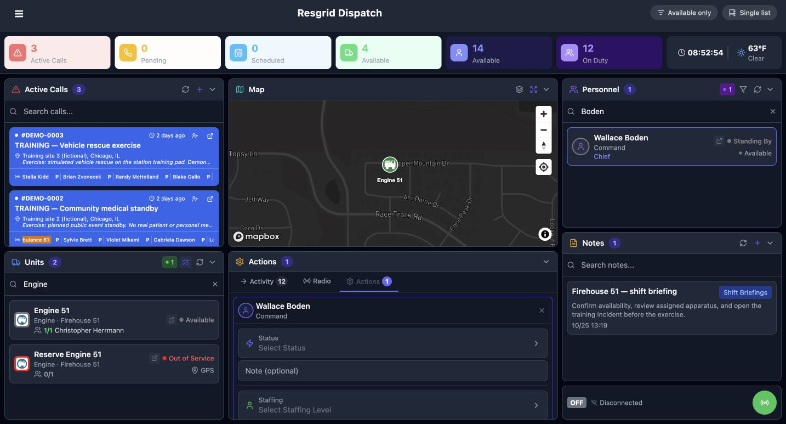
Practice
Confirm Wallace Boden and locate Staffing lower in the same action area.
Step 16
Choose a staffing level
Open Select Staffing Level. This department offers Available, Delayed, Unavailable, Committed, and On Shift. These are the staffing choices shown by this training configuration. Choose the level your organization intends to record. Our exercise uses Available, preserving the member’s existing response status.
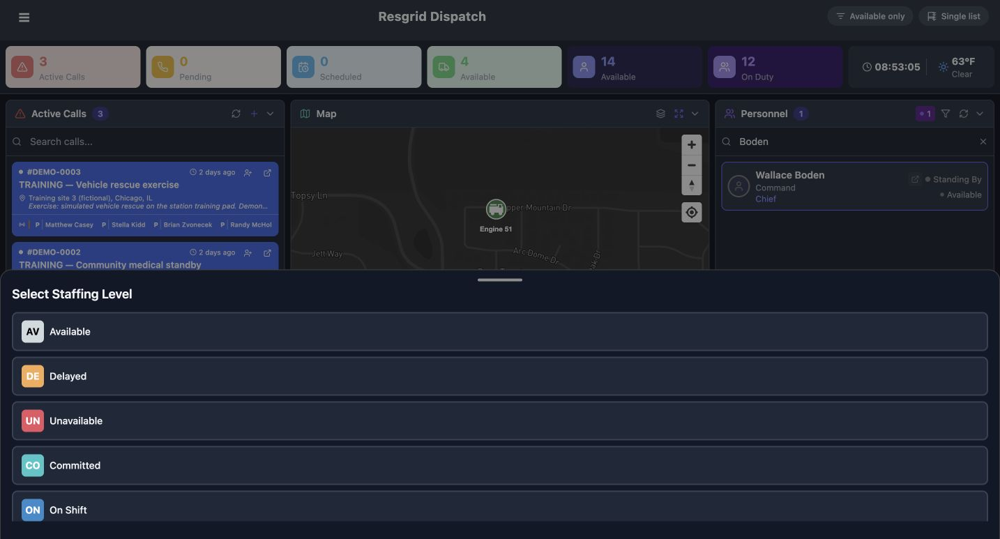
Practice
Review the staffing choices and select Available for this exercise.
Step 17
Review and submit personnel staffing
Review Wallace Boden, Staffing Available, and the note Training only, Dispatch staffing practice. Choose Update Staffing when those values are correct. Check the action’s label before submitting: this exercise sends the staffing form. It does not submit the separate response-status form above it.
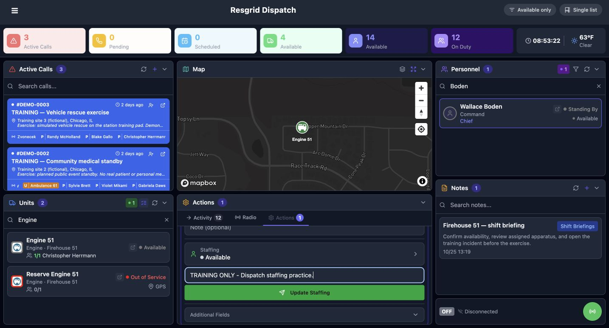
Practice
Check member identity, staffing level and note before Update Staffing.
Step 18
Read the staffing update result
The Activity Log now reports Personnel staffing updated. Wallace Boden’s card shows Standing By and Available. Read both values after submission, then use the personnel details view for a separate readback. The update event confirms the software action shown here; the next view identifies which fields are available to inspect.
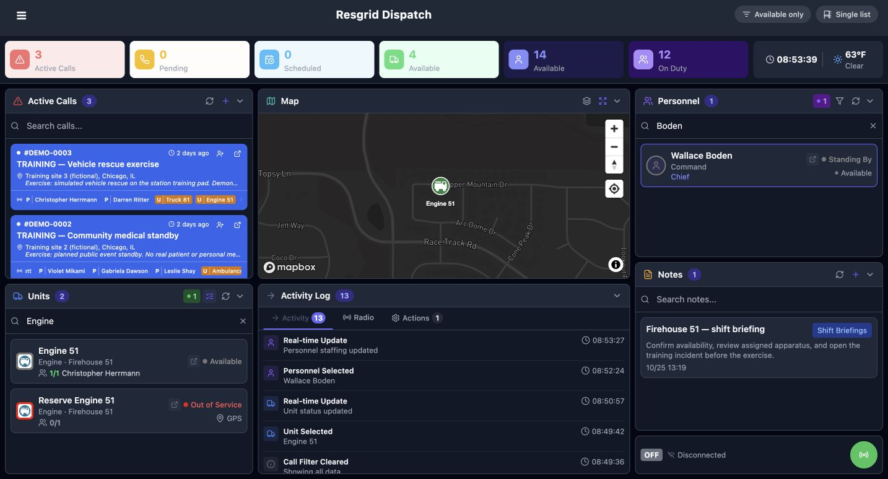
Practice
Find Personnel staffing updated and compare both displayed member values.
Step 19
Verify status and staffing separately
Open Wallace Boden’s details. Status and Staffing shows Standing By and Available in separate rows, with update timestamps, and Roles lists Chief. This page verifies the displayed response and staffing values; it does not display the staffing note. The same careful readback helps coordinators of community paramedicine, mental health response, search teams, security shifts, wildland crews, and industrial teams keep recorded staffing understandable.
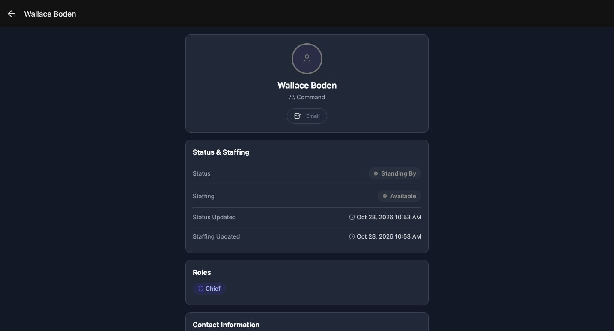
Practice
Verify the separate status and staffing rows without assuming an unshown note was read back.
Examples for your department
- Fire / EMS
- Coordinate recorded apparatus status and personnel staffing.
- Community response
- Review community paramedicine or mental health response-team staffing.
- Search and rescue
- Locate a search-team resource and maintain its recorded status.
- Security
- Keep personnel staffing distinct from a patrol unit’s status.
- Wildland
- Review contractor crew and vehicle records before a dispatch action.
- Industrial
- Maintain understandable response-team status and staffing records.
Transcript
Download transcriptRead the complete transcript
Dispatch: filter the console and update unit status and staffing Audience: Dispatchers, Authorized resource coordinators Find the console panels Resgrid Dispatch brings calls, units, personnel, the map, and notes into one console. This walkthrough is for dispatchers and other authorized coordinators who need to find the right resource and maintain its recorded state. We use a fictional firehouse, but the same console pattern can support community response teams, search and rescue, security operations, wildland contractors, and industrial response. Practice: Locate the call, unit and personnel panels before choosing a resource. Search within the call panel Start in the call panel and enter Community in its search field. The list now shows the fictional community medical standby. Notice that the top summary still reports three active calls while the searched panel shows one. Search helps find an incident in the list; check the incident name before selecting it. Practice: Search for an existing fictional call without modifying it. Recognize a selected call Select the intended call card. The blue Filtering by call banner identifies DEMO-0002, and the resource panels now say Units on Call and Personnel on Call. Call Notes is also scoped to that incident. Read this banner before acting. An On Call assignment label and the resource status are separate pieces of information. Practice: Confirm the call identifier in the banner and the incident-scoped panel headings. Clear incident context and check searches Use Clear Filter to leave the incident context. The banner is gone and the resource headings return to Units, Personnel, and Notes. Community is still in the call search field, so that panel remains narrowed. Clear its search separately when you want the full call list. This distinction helps explain why a panel can still look filtered after leaving an incident. Practice: Clear the call context, then separately clear the call-panel search. Inspect available units With the call search cleared, turn on Available only at the top. In this recorded example, the unit panel contains four units instead of six. Engine 51 is listed as Available. Read the resulting list and its count when filtering resources. A recorded availability value still needs to be interpreted using your organization’s dispatch procedure. Practice: Compare the visible unit list before and after Available only. Restore the unit list and search Turn Available only off, then enter Engine in the unit search. Two matches are visible: Engine 51, marked Available, and Reserve Engine 51, marked Out of Service. Check the full unit name and displayed state. Similar names make it especially useful to select from the unit panel deliberately and verify the selected resource before submitting an update. Practice: Locate the intended unit and distinguish it from similarly named resources. Open the intended unit’s actions Select Engine 51 in the unit panel. Its Actions area now identifies Engine 51 and exposes Status, Select Status, and Note. Check that identity before entering an update. This is the unit action form. Leave unrelated fields alone when the task only requires a status and its supporting note. Practice: Verify Engine 51 in the action area before opening Select Status. Read status and destination choices Open Select Status. The displayed choices include Responding, Available, Committed, and On Scene. The chooser also describes their destination support: Responding shows Call destination, while Available shows Station destination in this department. Choose the state that matches the intended action. For this software exercise, we choose Available. Practice: Review the actual department choices and select Available for this exercise. Check the destination selection Open Destination and review the current selection. No Destination is selected. The Stations section contains rows named No Station and Firehouse 51. A row named No Station and the separate No Destination choice are distinct entries in this example. We retain No Destination for the exercise. Check the selected destination before sending any status update. Practice: Confirm No Destination remains selected in this exercise. Review and submit the unit update Review the prepared values: Engine 51, Available, and No Destination. The note says Training only, Dispatch status practice. Once the intended resource and values are correct, choose Update Status. The note provides context for this fictional software exercise. For actual operations, enter the information your organization requires for the status change. Practice: Check resource identity, status, destination and note before Update Status. Read the update result After submission, the Activity Log reports Unit status updated, and Engine 51 still displays Available. We deliberately submitted the existing Available value as practice. Read the result rather than expecting a different status color. Next, inspect the unit’s separate details page to check the stored values. Practice: Find Unit status updated and compare the unit card’s displayed status. Verify saved unit state and crew Open Engine 51’s details using its details icon. Status Information shows Available, Destination shows None, and Status Updated provides a recorded timestamp. Assigned Roles still lists Christopher Herrmann. This readback lets a coordinator check the saved unit state and see the crew assignment on the same record. Practice: Read the status, destination and retained crew assignment in Unit Details. Read back the stored unit note Scroll within the same unit details page to Note. The exact training note is now visible as stored record text. Compare it with the note entered before submission. Checking the saved note is useful when another coordinator needs to understand the context of an update. Practice: Compare the saved Note with the submitted exercise text. Find the intended person Return to the console and search for Boden in Personnel. The matching Wallace Boden card shows Command and Chief, along with Standing By and Available. Read these fields separately: the card presents a response status and a staffing value. Confirm the person’s name before opening their actions. Practice: Find Wallace Boden and distinguish response status from staffing. Identify the separate personnel controls Select Wallace Boden. The Actions area now identifies that person and shows the response-status form with Select Status and its note field. Staffing has its own controls lower in this area. For this exercise, leave the response-status form unchanged and continue to the staffing selector. Practice: Confirm Wallace Boden and locate Staffing lower in the same action area. Choose a staffing level Open Select Staffing Level. This department offers Available, Delayed, Unavailable, Committed, and On Shift. These are the staffing choices shown by this training configuration. Choose the level your organization intends to record. Our exercise uses Available, preserving the member’s existing response status. Practice: Review the staffing choices and select Available for this exercise. Review and submit personnel staffing Review Wallace Boden, Staffing Available, and the note Training only, Dispatch staffing practice. Choose Update Staffing when those values are correct. Check the action’s label before submitting: this exercise sends the staffing form. It does not submit the separate response-status form above it. Practice: Check member identity, staffing level and note before Update Staffing. Read the staffing update result The Activity Log now reports Personnel staffing updated. Wallace Boden’s card shows Standing By and Available. Read both values after submission, then use the personnel details view for a separate readback. The update event confirms the software action shown here; the next view identifies which fields are available to inspect. Practice: Find Personnel staffing updated and compare both displayed member values. Verify status and staffing separately Open Wallace Boden’s details. Status and Staffing shows Standing By and Available in separate rows, with update timestamps, and Roles lists Chief. This page verifies the displayed response and staffing values; it does not display the staffing note. The same careful readback helps coordinators of community paramedicine, mental health response, search teams, security shifts, wildland crews, and industrial teams keep recorded staffing understandable. Practice: Verify the separate status and staffing rows without assuming an unshown note was read back. Examples for your department Fire / EMS: Coordinate recorded apparatus status and personnel staffing. Community response: Review community paramedicine or mental health response-team staffing. Search and rescue: Locate a search-team resource and maintain its recorded status. Security: Keep personnel staffing distinct from a patrol unit’s status. Wildland: Review contractor crew and vehicle records before a dispatch action. Industrial: Maintain understandable response-team status and staffing records.